This section introduces the use of the MatchSim program in the following sections.
The Matchmaking Simulator interface is divided into two panes. The left pane is a tree view, from which you can select different panels that appear in the right pane. The following image shows a typical MatchSim session.
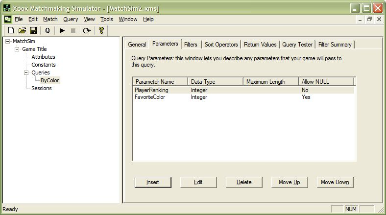
Illustration A Typical MatchSim Session
The Game Title panel enables you to specify the name and title ID of your game.
The Session Expiration value is the minimum number of seconds that MatchSim keeps a Matchmaking session that has not been updated. For sessions that aren't hosted by PC game servers, this is a backup in the event that dead Xbox detection fails. For these sessions, the value should be left at its default. For PC game servers, the value should be much smaller (60–120 seconds), because there is no way of detecting when a PC that is hosting a session goes offline.
This panel also contains the Statistics group box, which is shown in the figure below. The Statistics group box displays information about the current MatchSim session.
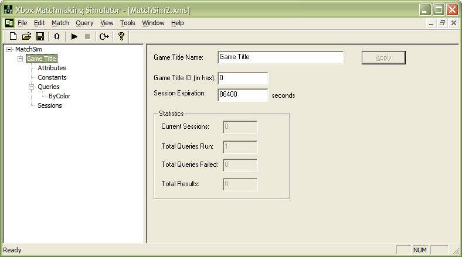
Illustration The Game Title Panel
Specifying a value for Game Title Name is optional; it only changes the title name displayed in the left pane. However, you must specify your game's title ID (in hexadecimal) in the Game Title ID text box.
The Attributes panel, shown in the illustration below, is where you specify attributes that your game advertises.
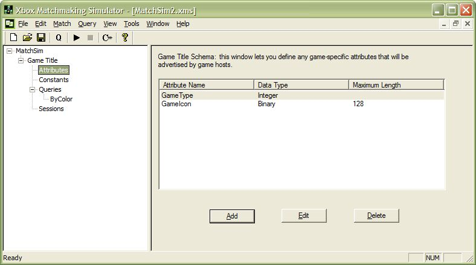
Illustration The Attributes Panel
To add a new attribute to the schema, use the following steps.
In the Schema dialog box, click Add. The Add/Modify Attribute dialog box appears, as shown below:
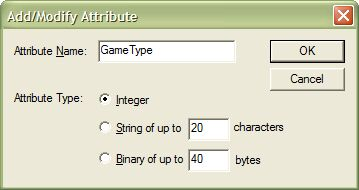
Specify the maximum length of string or binary attributes.
Note Be sure to specify only as much space as you really need for string and binary attributes. The C++ code that MatchSim generates uses these values. As a result, specifying a data length longer than your title requires may unnecessarily increase the memory required to build a matchmaking query.
To save a new attribute, click OK.
-Or-
Click Cancel to leave the dialog box without making any modifications.
To edit an existing attribute, do the following:
To delete an attribute, select it from the list and click Delete.
The Constants panel, pictured below, enables you to define constants whose values can be included in a matchmaking query.
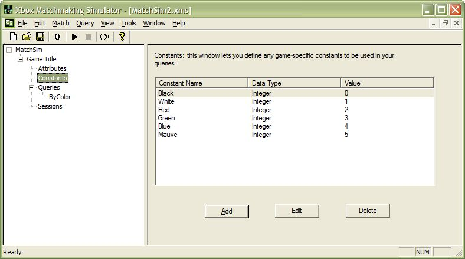
Illustration The Constants Panel
To add a new constant to the schema, do the following:
Click Add. The Add/Modify Constant dialog box appears, as shown below:
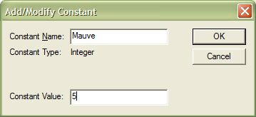
Enter a value in the Constant Value text box.
Note Constants must be unsigned decimal integer values.
-Or-
Click Cancel to leave the dialog box without making any modifications.
To edit an existing constant, do the following:
To delete a constant, select it in the list, and then click Delete.
MatchSim generates three types of queries: Normal, Find From ID, and Sessions Summary. Find From ID and Sessions Summary queries are specialized for particular purposes. Use a Find From ID query for Friend invites, host migration, and reconnecting after rebooting between levels. Use Sessions Summary queries to collect information grouped by a specified attribute.
When you first start the Matchmaking Simulator, the Queries item in the tree view is empty. To add a query, follow the steps below:
In the toolbar, click New Query (it is marked with a "Q").
-Or-
On the Match menu, click New Query.
-Or-
Right-click the Queries node in the tree view, and then click New Query on the pop-up menu that appears.
The new query appears underneath the Queries node in the tree view.
To copy an existing query, select the query node in the tree view that you wish to copy. Next, click Copy Query on the Query menu. Alternately, you can right-click a query in the tree view, and then click Copy Query on the pop-up menu.
To delete a query, select the query node in the tree view that you wish to delete. Next, choose Delete Query from the Query menu. Alternately, you can right-click a query in the tree view, and then choose Delete Query from the pop-up menu.
To edit or test a query, click the node for the appropriate query. The query editing and testing panel appears in the right pane. Functions of the query editing and testing panel are divided into seven subpanels in a tabbed dialog box. Through the tabs, you can select the following options:
This panel enables you to specify general properties of the query as a whole. The General panel displays the Query ID for the selected query, in hexadecimal. (You cannot edit this value.) Enter the maximum number of results that this query is allowed to return in the Max Results text box. (There is an absolute maximum of 50 results, regardless of what you enter.)
Click Apply to save changes made in the General tab.
This panel enables you to define parameters for the query. To insert a new parameter, click Insert, which brings up the Insert/Modify Parameter dialog box, shown here.
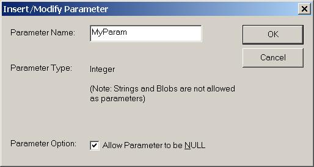
As for attributes, parameters may be integer, string, or binary values. In addition, you can select the Allow Parameter to be NULL check box to signal that the parameter can be ignored in the filtering stage of the query. This allows a parameter to be used as part of an "any" style query, where any value is valid for that particular parameter.
To edit an existing parameter, select it in the list and click Edit. To delete a parameter, select it and click Delete. You can also move a selected parameter up and down in the list by clicking the Move Up and Move Down buttons.
Use the Filters panel to define rules that restrict the sessions returned by a query. To create a filter, click Add. This opens the Add/Modify Filter dialog box, which is shown below.
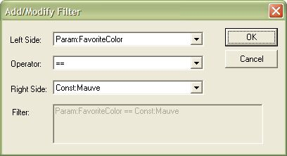
Choose the two values you wish to compare in the filter by selecting them from the Left Side and Right Side drop-down lists. You can select custom attributes, parameters, and session attributes. Next, choose a comparison operator from the Operator drop-down list. The dialog box displays your filter in the Filter section.
To edit an existing filter, click Edit. To delete a filter, click Delete.
Use this panel to sort the sessions returned from the matchmaking server. To add a new sort operator, click Insert, which displays the Add/Modify Sort Operator dialog box:
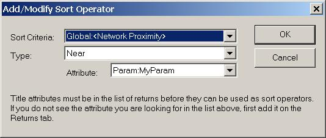
Select an attribute from the Sort Criteria drop-down list, and then, in the Type drop-down list, choose the type of sort that should be performed. This can be a simple sort, such as sorting the results in Ascending or Descending order. You can also use the values Near and Far for fuzzy matching. Fuzzy matching enables you to create queries that return sessions with attributes that are close to, but not exactly matching, a specified parameter value. You can think of the parameter value as the center point. The list of sessions the query returns is sorted by the distance from the center point, ordered with either the near values first (ascending) or the far values first (descending). Specify the center point value using the Attribute drop-down list.
To edit an existing sort operator, select it in the list and click Edit. To delete a selected sort operator, click Delete. You can control the order in which sort operators are processed by moving them up and down in the list with the Move Up and Move Down buttons. The matchmaking server processes sort operators at the top of the list before operators located lower in the list.
The next panel is where you specify the values that your matchmaking query returns. To add a return value, click Insert, which displays the Add/Modify Return Value dialog box.
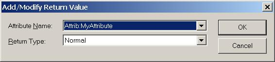
Select the attribute you wish to return from the Attribute Name drop-down list. You may also need to select the return type from the Return Type list.
To edit an existing return value, select it in the list, and then click Edit. To delete a return value, highlight it, and then click Delete. You can control the order in which values are returned by moving them up and down in the list with the Move Up and Move Down buttons.
This panel displays the values for the query's parameters in the Parameter Values section at the top of the panel. To test your query, select a number of users from the Number of Users drop-down list and click Run Query. The results from running the query appear in the grid on the lower half of the panel.
This panel displays a pseudocode summary of the filter settings that you created in the Filters tab.
There is a quality of service (QoS) code generation check box option for queries on the General tab. When you select this check box, the wizard generates code that performs connectivity probing before returning the list of matching sessions, and QoS bandwidth probing after returning the list. The check box option is available both at query creation time (in the New Query dialog box) and also in the General tab when inspecting existing queries. Title developers can turn on or off QoS code generation on a query-by-query basis as needed.
If you enable QoS probing, MatchSim adds an attribute called qosprobe to the <query> element in the .xms file it generates. This is demonstrated in the following sample query.
<queries> <query id="0x1" name="OptiMatch" maxresults="25" nopubok="0" qosprobe="1">
For more information, see the QoS Probing and Listening section of the MatchSim Generated Code topic.
Selecting the Sessions node in the left pane displays either: 1) advertised session data from a running title, or 2) data imported from a Matchmaking Simulator data file (.xmd file extension). The matchmaking queries you define in the MatchSim tool run against the data displayed in the Sessions panel.
Clicking the Sessions node populates the list in the right pane; you can refresh the list by clicking the Refresh button.
Once you have put date into the Sessions panel, you may export that data to a file by clicking Export Data. To import saved session data, click Import Data.
The MatchSim tool can simulate a running session so you do not have to have an extra Xbox Development Kit running your game title. To create a simulated session, click Add Session. The Add Session dialog box appears, which contains an entry field for each attribute that you have defined in MatchSim. In addition, it always contains the Public Open, Public Filled, Private Open, and Private Filled attributes. The following image is an example of how the dialog box might look.
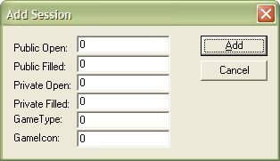
Note The actual appearance of the Add Session dialog box depends on the attributes you have defined.
Fill in the values that should appear in the simulated session. To add the session to the list that is displayed in the MatchSim tool's Sessions panel, click Add.
Sessions do not disappear from MatchSim when a development console is turned off as they would in the Xbox Live service when a connected Xbox console is turned off. The reason is that the normal presence mechanism is not involved in the communication between the development console and MatchSim.